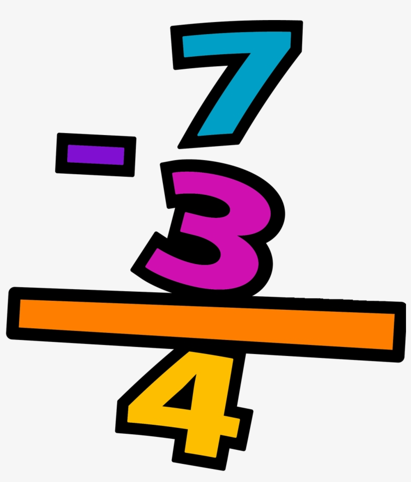

Matemáticas Básicas: RestaLección completa: definiciones, métodos, ejemplos y ejercicios sobre la resta |
|||||||||||||
| Inicio | Números | Suma | Resta | Multiplicación | División | Trigonometria | Geometría | Álgebra | Contacto | |||||||||||||
Cómo usar esta página
Consejos prácticos
CuriosidadAntes de que se estandarizara el signo “−”, los comerciantes describían la acción como “quitar” o “menos” en textos contables antiguos. |
¿Qué es la resta?La resta es una operación aritmética que consiste en quitar una cantidad a otra para obtener la diferencia entre ambas. Se escribe con el signo −. Terminología
Breve historiaLa resta aparece en registros muy antiguos (tablillas, cuentas). El símbolo moderno “−” se popularizó en Europa en los siglos XV–XVI. Métodos para efectuar una restaCon objetos o dibujosRepresenta físicamente lo que se quita (por ejemplo, 8 fichas y quitas 3 → quedan 5). En la línea numéricaColoca el dedo en el minuendo y avanza hacia la izquierda el número del sustraendo. En columna (algoritmo tradicional con “pedir prestado”)Se alinean las cifras (unidades con unidades, decenas con decenas) y se resta columna por columna de derecha a izquierda. Si la cifra del minuendo en una columna es menor que la del sustraendo, se pide prestado 1 de la columna siguiente (equivalente a 10 en sistema decimal). Ejemplos paso a pasoEjemplo 1 — sin pedir prestado
54
- 21
----
33
Unidades: 4 − 1 = 3. Decenas: 5 − 2 = 3. Resultado: 33. Ejemplo 2 — pidiendo prestado63 - 28 ---- Paso a paso:
63 - 28 ---- 35 Ejemplo 3 — resta con encadenamiento de préstamos1002 - 789 ------ Algunas columnas requieren préstamos en cadena; realiza los préstamos desde la columna no nula más a la izquierda. Resta con decimalesSiempre alinea los puntos decimales. Si faltan cifras, completa con ceros. 12.50 - 3.75 ------ 8.75 Resta y números negativosCuando el sustraendo es mayor que el minuendo, la diferencia es negativa. Ejemplo: 3 − 7 = −4. En la recta numérica, se mueve hacia la izquierda más allá del cero. Propiedades
Errores comunes
Aplicaciones en la vida diaria
Tabla de ejemplos
EjerciciosBásicos
Intermedios
Soluciones
|
||||||||||||
|
© 2025 Matemáticas Básicas | Proyecto educativo en HTML puro |
|||||||||||||